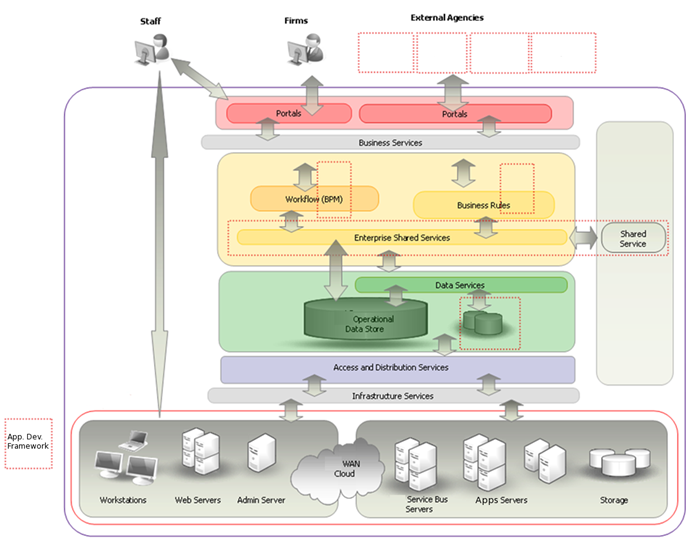

OUM |
Task Overview |
||
Method Navigation |
Current Page Navigation |
||
|
|
||||||||
The purpose of this task is to identify the need to engage one or more types of architects (for example, business architects, information architects, application architects, etc.) in either a pre-sales or post-sales opportunity. Because each organization may have its own engagement models, you need to contact the organizations owning the desired resources and adhere to their engagement models.
Oracle’s product portfolios have increased substantially over the last few years and, as a product vendor, we are often asked by our perspective customers how the various Oracle products can meet their needs from an enterprise wide perspective. In addition, our products often have some degree of functional overlap and it is therefore important to position skilled architects who have a holistic view of the enterprise ’s business requirements and technology solutions to effectively position our products in the most efficient manner. An enterprise architect (EA) is solution agnostic and by the nature of their role, in a position to become a strong neutral influencer with the customer and is often in the best position to unify solutions across Oracle’s lines of business.
The goal is to get buy-in from internal Oracle management teams for the value of including the architect role throughout the engagement.
INIT.ACT.PEF Prepare Envision Foundation
Assigned Enterprise Architect
The Assigned Enterprise Architect is engaged with the enterprise.
You should follow these steps:
No. |
Task Step | Component | Component Description |
|---|---|---|---|
1 |
Identify the need for architects and the type(s) of architect required. | None | If the customer has challenges in managing the complexity of their technology real estate or in starting a new strategic IT initiative. |
2 |
Engage architect resources. | None | Use your local engagement model to find and engage the architect resources on your enterprise or solution architecture opportunity. |
An enterprise architect focuses on enabling customers to maximize the leverage of their IT portfolio. The EA organizes the business, application, technology and integration portfolios into a coherent structure reflected by architecture blueprint documentation to enable the business to operate and change effectively. A key aim for an EA is to organize the technical complexity of interdependencies into a manageable structure that enables customers to adapt and transition their business and technology assets more effectively to meet future requirements. an EA will inevitably need strong facilitation and communication skills and show no bias for a given technology or product line. Therefore, it is highly likely that the role involves long-term commitment but not one that requires a consistent presence at the customer's locations.
Oracle recognizes a number of different architect roles across both pre-sales and consulting, all of whom are in limited supply. The role names for these architects may differ globally, but many of the concepts are the same. For an apps/tech, cross-domain, strategic account Insight, you will likely want to request and justify the engagement of an Oracle enterprise architect during the Insight discovery, solution development and solution presentation phases. When deep architecture skills in specific domain areas are required, you will want to engage more specialized solution or technical architects.
The following illustrates a typical customer architecture blueprint that focuses on service orientation that an EA is likely to develop on behalf of the customer. The example outlines the fact that blueprints may be focused in specific parts of an enterprise architecture, such as, the application portfolio.

Example Enterprise SOA Blueprint
The role of the enterprise architect in the engagement is:
This task is not trying to replace your local and possibly unique engagement models for justifying and securing architect resources. Please follow the appropriate engagement model rules and processes to find an architect for your enterprise or solution architect customer opportunity.
This task involves the following method roles:
Role |
Responsibility |
% |
|---|---|---|
Enterprise Architect |
Work with the sales manager to qualify the opportunity for engaging with a particular customer. Once qualified, the appropriate roles and expertise is identified and a team is assembled according to those needs. | 50 |
Sales Manager |
Work with the enterprise architect to qualify the opportunity for engaging with a particular customer. Once qualified, the appropriate roles and expertise is identified and a team is assembled according to those needs. | 50 |
* Participation level not estimated.
You need the following for this task:
Prerequisite |
Usage |
|---|---|
Approval in the form of presales or investment effort for the customer by the appropriate level of management. |
|
Acceptance of the goals of the EA by the appropriate customer stakeholders. |
|
The EA is knowledgeable about the use of general enterprise architectural frameworks and methodologies (e.g., TOGAF, RUP, etc.). |
There are currently no templates available to assist with this task.
An Assigned Enterprise Architect is used as follows:
This section is not yet available.

Copyright © 2006, 2016, Oracle and/or its affiliates. All rights reserved.